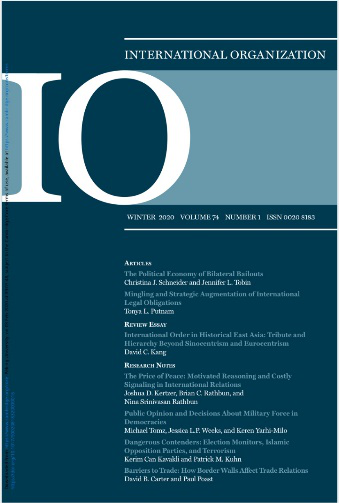

收录于合集

作品简介
【作者】 Susan D. Hyde，加州大学伯克利分校政治学教授，研究领域有比较政治学、国际规范等。
Elizabeth N. Saunders，乔治城大学外交学院副教授，主要研究美国外交政策。
【编译】 董骁天 （国政学人编译员，北京大学国际关系学院）
【校对】 张曼娜
【审核】 金琳
【排版】 梁鑫昱
【来源】 Hyde, S. D., & Saunders, E. N. (2020). Recapturing Regime Type in International Relations: Leaders, Institutions, and Agency Space. International Organization, 1–33. doi:10.1017/s0020818319000365

期刊简介

《国际组织》（ International Organization ），简称“IO”，是一份经过同行评议的季刊，涵盖国际事务的各个领域。它创刊于1947年，由剑桥大学出版社代表国际组织基金会出版。2018年影响因子4.508，在91种国际关系期刊中排名第1。
重新理解国际关系中的政体类型：领导人、制度与代理空间
Recapturing Regime Type in International Relations: Leaders, Institutions, and Agency Space
内容提要
01
**研究背景
**
1） 在几代国际关系学者的研究中，一个国家是否民主是理解国内政治在国际事务中作用的重要方式。许多学者得出的结论是民主国家国内观众（domestic audience）的问责机制（accountability）使前者的国际行为有别于威权国家，后者的领导人享有更大的自由度。 总的来说，自康德以来的许多关于国内政治与国际关系的基础文献都假设民主国家领导人在执行外交政策时比威权者更受约束。
2） 近年来，国际关系研究从个人、国家、国际社会三个层面对上述观点提出了挑战。这项研究得出的一个惊人结论是， 民主和威权国家领导人往往能够达到类似程度的约束，并在许多问题领域实现相同的国际结果，甚至可以通过传统上与相反政体紧密相连的机制来实现这一点。 纵观国际关系的许多重要问题，最近的研究可以给人留下这样的印象： 民主与威权政体之间的界限是模糊的，一些学者已经利用这些观点和相关发现来质疑政体类型与国际行为的持续相关性。
02
研究问题
本文主要探讨两个核心问题：
1）为什么不同政体类型能够实现相似的结果？
2）政体类型在国际关系中是否依然重要？
03
核心观点与方法
1）尽管民主和专制国家领导人有时同样会受到国内观众的限制，从而实现类似的国际结果，但是政体类型仍是国际事务中的一个关键区别。本文关注在国际关系领域中尤为突出的政体类型组成部分——国内观众限制领导人行动的程度。管理领导人、精英和大众之间互动的政体类型或国内政治制度为所有政府设定了国内观众约束强度的缺省值（default level of domestic audience constraint），该值在民主国家更高，但是领导人仍能通过维持制度中的代理（agency）并有意地增加或减少其面对的观众约束。因此，本文认为国内观众约束既有结构上、制度上的，也有战略上的、领导者驱动的，这两者对我们充分理解国际关系领域许多问题中的国内观众限制至关重要。
2）本文建立了“可塑性约束”框架，旨在重新理解国际关系中的政体类型。本文不仅强调在政体类型光谱上国内观众约束的缺省值变化，同样关注制度设定的边界内领导人可以进行战略性调整的代理空间，以及国际环境（国际压力）影响前两者的途径。
3）在制度设定的边界内，领导人拥有一定的代理空间以自愿招致代理成本，以此增加或减少对国内观众约束的接触。本文推测在试图调整约束限制时，威权国家激发制度或政体变迁的风险更高，因为民主国家具有制度灵活性的优势。
文章导读
01
国内政治与国际关系：超越民主“假体”（dummy）
作者首先梳理了两代国际关系学者的对政体类型研究的不同观点。
1. 第一代政体类型研究的特点
首先，假设政体类型和国内观众限制之间是简单的二分关系 ，政体类型直接决定了领导者与国内观众的接触与否。即使第一代学者用连续性方法测量民主，在民主与威权之间仍然有直接粗犷的分别，这就是众所周知的“民主假体”（democracy dummy）。
其次，关于民主政体独特性的论点通常集中在民主国家面对更高程度的国内制度约束。 这些观点认为威权政体受到的约束更少，因此在国际事务中具有更大的灵活性。但更大的国内约束会带来“民主优势”（democratic advantage），许多观点认为民主制度或民主国家的观众偏好是一种约束力量。
第三，思考对观众约束的战略操纵（manipulation），但主要关注民主国家。 在强制外交的背景下，“观众成本”（audience costs）的概念成为对观众约束的战略操纵的重要特例，领导人试图通过增加国内约束来束缚自己的手脚。而IPE学者通常持有相反观点，例如认为应该通过将贸易政策委托给行政部门或官僚机构以隔离政策制定与国内观众。
最后，许多学者因为倾向于将制度层面视为背景结构，从而忽视了国际层面和政体类型的互动关系。
2. 第二代政体类型研究的特点
第二代有关国内政治和国际关系的研究挑战了民主和威权政体之间尖锐的分界线。 该研究将政体类型中的制度和约束进行了分解，展示了不同类型的威权政体和民主政体之间的不同约束层次。这进一步表明某些条件下民主和威权政体可以通过相似的约束水平实现类似的国际结果。与此同时，一些最近的研究主张更多地关注国际层面的因素如何能减轻政体类型的影响。
第一类研究关注国际关系中的威权国家（Autocracies in IR, 记作AIR），认为威权国家有时能达到与民主国家类似的国内观众限制水平和国际结果，这方面的研究强调威权国家的国内约束和问责；第二类研究关注国际关系中的民主国家（Democracies in IR,记作DIR），认为民主国家的国内约束不同或更有限，一些民主国家及其领导人能够通过回避和操纵观众约束的方式获得灵活性，而另一些民主国家的行为可能与威权国家非常相似；第三类学术研究认为，国际层面的变量影响政体类型和利用国内政治获取国外优势的激励机制（这类研究根据Peter Gourevitch的作品命名为SIR）；第四类研究利用跨政体类型的国家特征（如军民关系）来解释政策选择或国际结果的相似性；第五类研究在经验的基础上对政体类型的重要性提出质疑。
在本文中，作者主要关注第二代学者的前三类研究。
02
国内观众约束的结构性和战略性来源
前三类研究发现，相同政体类型内部和不同政体类型之间观众约束的差异更大。本文遵循了广义概念的“国内观众”来指代能够在一系列问题领域中观察政府及领导人行为，并有潜力施加约束的行为人或群体，比“观众成本”用法更广泛。此外，本文对国内观众约束的研究框架与以下两个争论有关：一是不同政体的国家在制定对外政策时如何回应国内观众；一是不同政体的国家是否试图实现不同的国际结果。
表1 文献综述分类
本文认为许多第二代学者分别探索了结构和战略两个约束的不同来源，如表1所示。 约束的结构性来源是相对持久的国内制度力量，它根据不同政体类型设定了约束的强度和范围的缺省值。战略来源包括领导人在制度限定的范围内为了战略性调整相关国内观众的规模、组成、信息来源或政治活动所采取的一系列行动。
本文通过表格形式让既有研究发生对话，表明结构和战略因素都影响问责链条的不同步骤。Baum和Potter指出，反对党的数量、自由媒体的多样性和活力等结构性因素会影响观众对其领导人的国际表现的了解程度以及对观众偏好的满足程度。但是，领导人也可以反过来战略性地收紧或放松信息流，如果参与者被排挤出信息圈层或成为“理性的无知者”，就能够影响观众的信息水平，甚至是有效观众的规模。
在表1的AIR研究类别一栏中，尽管Weeks和Weiss关注了威权国家领导人如何能够被国内观众约束，但他们在结构/战略维度上各有侧重。Weeks探讨了威权国家中观众约束的结构性变化如何塑造冲突行为。Weiss则研究了在单一威权政府中，随时间推移统治精英的战略导致观众限制的变化。
在DIR研究一侧，右上象限包括了对结构性民主约束的分析，Baum和Potter主要根据政党数量和媒体的开放水平排列了不同民主国家的约束强度。而右下角的内容是单个国家的民主领导人如何战略性管理对国内观众的限制以实现自己的政策偏好。Naoi认为亚洲的一些民主国家领导人通过向立法者支付报酬来规避贸易保护主义观众的限制，为贸易自由化铺平道路；Milner和Tingley认为美国总统可能使用军事手段来规避国内观众带来的收入分配和意识形态方面的限制。
箭头表示的是SIR类别，也就是国际层面的战略/结构划分。Gunitsky探讨了改变国家采取特定制度形式（例如民主）的国际激励机制发生长期结构性变化后，会对约束领导人的国内观众造成何种影响；Conrad和Ritter认为，国际制度（例如国际人权条约等）能够改变领导人的人权侵犯行为的战略动机，并使其规避国内观众压力。
以上研究说明了国内观众限制如何因政体类型而异，但对不同政体类型进行比较时，许多学者指出民主政体和威权政体在约束方面存在相似之处。如果两种政体都能利用民意来披露信息并进行有效沟通，那么必须有其他解释民主和平论的因素。为什么威权政府不更经常地利用观众约束来获得国际利益？有可能调和第一代和第二代的研究发现吗？
03
可塑性约束与代理空间：不同政体类型的问责机制
本文构建了“可塑性约束”框架，将民主和威权政体之间的长期结构性差异与短期观众约束的可塑性区别相结合。 假设问责要求国内观众具有对领导人施加成本的能力、可能与领导人发生偏离的偏好、相关信息的获取和对问题的足够关注。这条链上的变化会对问责产生影响。
作者认为 民主的独特性不仅因为民主国家观众限制水平的缺省值更高，还具有制度所决定的更灵活和低风险的战略行动空间（代理空间，agency space）。
图1 政体类型光谱
如图1所示，理解特定时间内领导人的国内观众约束水平应当掌握三类信息：（1）国家的政体类型，这一点确定了落在x轴的位置，并由此决定了约束的缺省值（虚线）和代理空间的极限（实线）；（2）领导人是否决定在代理空间内对约束进行战略性调整（向量）；（3）纵向移动可能面对的成本或风险。
图1突出了第二代研究的若干贡献，尤其通过在x轴上移动对比实现了对政体类型的分解。左侧代表威权政体，a点代表个人独裁主义，b点是“受约束的威权主义”（精英能够对领导人构成约束）。x轴中部的混合型政体类型兼具民主和威权的制度特征。右半部分则是对不同形式民主政体的比较，例如在政党或媒体结构中的区别，或者选举系统的代表性差异。
图1的向量说明了在代理空间内进行战略移动的四种情况。为实现移动，领导人需要付出成本或承担风险。根据Weeks的观点， 在威权国家领导人中，个人威权主义的领导人（a）与更受约束的威权主义领导人（b）相比，需要更长的路径来实现相同的约束水平。 Weiss的观点则体现在b点的纵向移动上。同理，根据Baum和Potter的研究， 政党较少、媒体开放水平较低的民主国家领导人（c）比拥有更多政党和媒体活跃的民主国家领导人（d）受到更少的约束。在给定的制度类型中，移动代理的成本随着从缺省值的移动距离的增加而加大，但图1并不能描述不同政体类型的代理成本和风险。
04
跨制度类型的比较：不同机制的相似约束
图2 政体类型的详细比较
当作者试图在不同政体类型之间做出更详细的比较时，潜在的重叠区域就会更大（更大的灰色区域）。正如图2.1中b点所示，受约束的威权政体领导人能够达到更接近民主特征的暴露（于国内观众的）程度，图2.2中c点的选举式民主领导人也能实现更接近威权政体的限制规避。
但是图1图2清楚地表明，领导人能够暂时达到类似的约束水平并不意味着政体类型无关紧要。 决定观众约束的结构和战略因素可能随着不同问题、环境和特定政体而发生改变。决策者只能在有限范围内对观众约束进行调整，并且承担着很高的事后成本。
总的来说，本研究中的可塑性约束框架与第一代研究有所不同，后者倾向于假设民主政体比威权政体更受约束，或认为威权政体受到较小且固定的约束。但也与第二代研究有所不同，后者强调国际结果的相似性，并削弱了民主政体的优势或破坏了国际关系中政体类型的相关性。
05
民主特性的替代来源
尽管图1提供了继续理解政体类型的重要背景，但作者认为民主和威权的其他特性没有完全发展出来或体现在文献中，且这对彻底理解国际关系中的政体类型十分必要。 对于本研究中关于民主特性的修正主义观点来说，领导人使用代理空间的灵活性至关重要。作者认为这种灵活性至少有三个来源：代理成本的本质、国内制度的弹性和民主领导人改变观众特征方面的广泛选择，以及国际压力。 作者认为其部分推测可能导致相反的结论，或许需要未来进一步深入探究这些因素如何影响国际结果。 作者强调民主的持续独特性，并敦促研究者谨慎地得出威权国家领导人能够轻易实现民主国家级别的国内观众约束的结论。
06
结论
政体类型为国家领导人提供了重要的结构性约束并限制了政治精英战略性操作这种约束的程度。 这种操作可能会在特定的问题领域带来重要回报，但也可能适得其反。
作者还得出了几个重要结论。首先，结构性约束和战略行为之间的联系十分重要，因为他们影响了领导者在触发更持久的制度变革之前可以增加或减少多少责任，并对理解政体类型至关重要。其次，尽管对民主和威权的衡量方法都有所改进，但是对观众约束的战略来源的关注，凸显了更好的衡量方法在理解政体类型对国际行为影响上的局限性。第三，民主的优势在于，即使威权领导者决定支付成本并达到民主政体所能达到的观众约束水平，可能也不会导致其国际政策的巨大转变。最后，重新关注制度层面对国内机构的影响表明，国内政治和国际政治依然是不可分割的。
译者评述
战后国际关系学界对政体类型的研究从第一代民主与威权的零维二元对立逐步发展到第二代中两种政体的一维线性相关。第二代学者从结构性和战略性两个角度衡量民主与威权政体在观众约束程度上的连续可变性。然而，根据本文观点，在约束程度上的连续可变性并不意味着两种政体差异的直接丧失。
本文最具创造性之处在于，作者发展出可塑性约束框架这一二维的理论模型，来调和从零维到一维的表面矛盾。作者将一维理论中不同政体类型在观众约束水平上的差异放在代理空间平面中给予合理和细致的解释。根据本文观点，即使不同政体能够通过支付代理成本等三个来源影响观众约束，其政体依旧限制了代理空间的调整范围，超出阈值或一定频度的调整可能引发政体变迁等严重后果。
通过以上回顾，译者不禁联想到亚里士多德的政体理论。其研究也深入到不同政体类型内部的亚种，例如根据权力来源和限制将君主政体划分为五个亚类、城邦国家的政体类型被划分为六大类和二十多个亚种。这证明了早在亚里士多德时期就已经出现了复杂和弹性的政体观，他发现了不同政体类型之间存在着的混合形态和模糊地带，不同政体类型内有各自的调整空间，反映了单一序列上的级数差异而不是类的对立[1]。因此，译者斗胆认为本文中的第二代研究实际上是对亚里士多德的重温和致敬，他们在更精细的层面和角度探讨了不同政体的连续性特征，在一维线条中淡化了冷战时期非此即彼的意识形态对立，是冷战后具有进步意义的发展。而本文的二维理论则创造性地对既有研究进行了调和，并发展出更加全面和清晰的观点。笔者认为，这种理论维度的发展要比同一维度内的研究更具历史性意义。
然而，笔者认为本文依然有发展空间。根据本文图表，作者将可塑性约束模型中的阈值和缺省值简化为平行的直线且上下调整空间相同，这样一来文中的代理空间模型就成了中心对称图形，只能大致得出两种政体的相对优势（这种优势互补对称、互为优劣）。但若想更加准确地运用这一模型得出不同政体的独特性优势或进行价值判断，显然需要对两者的斜率、位移量甚至形态差异进行细化研究，由此得出不同政体在调整能力、不同调整区间的优势等方面的进一步结论。在现实层面，这对理解和制定对外政策等也有重要价值。
【参考文献】
[1] [美]列奥·施特劳斯、约瑟夫·克罗波西主编，李天然，等译．政治哲学史(上)[M]．石家庄：河北人民出版社，1993：152
文章观点不代表本平台观点，本平台评译分享的文章均出于专业学习之用, 不以任何盈利为目的，内容主要呈现对原文的介绍，原文内容请通过各高校购买的数据库自行下载


好好学习，天天“在看”
国政学人
支持学术公益与知识传播
微信扫一扫赞赏作者 __赞赏
已喜欢，对作者说句悄悄话
取消 __
发送给作者
发送
最多40字，当前共字
上一页 1/3 下一页
长按二维码向我转账
支持学术公益与知识传播
受苹果公司新规定影响，微信 iOS 版的赞赏功能被关闭，可通过二维码转账支持公众号。